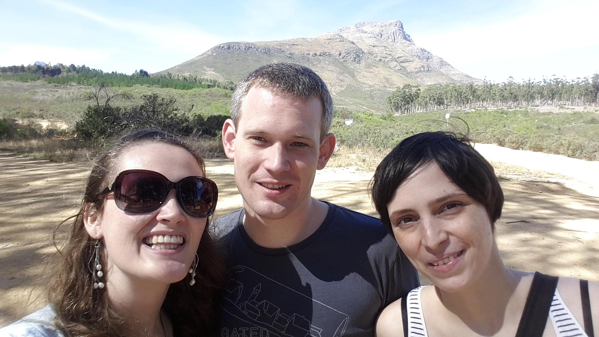
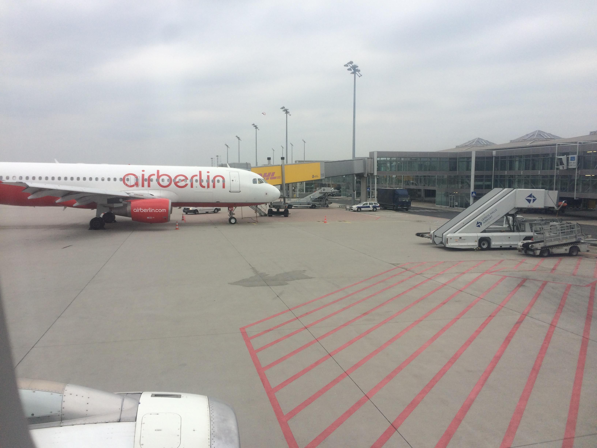
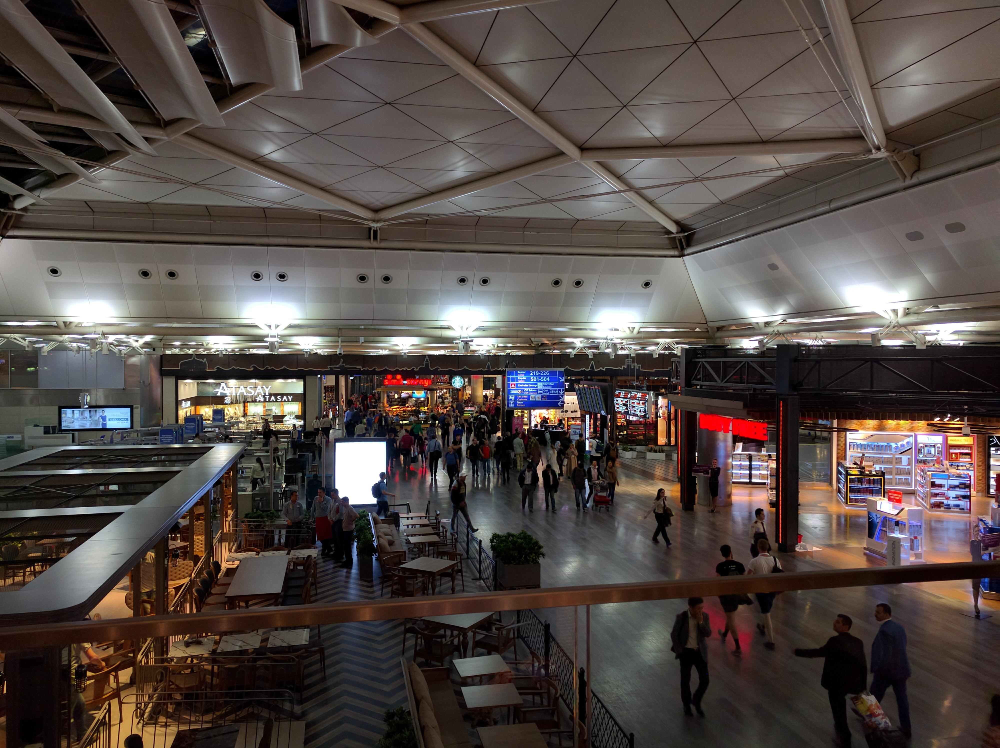
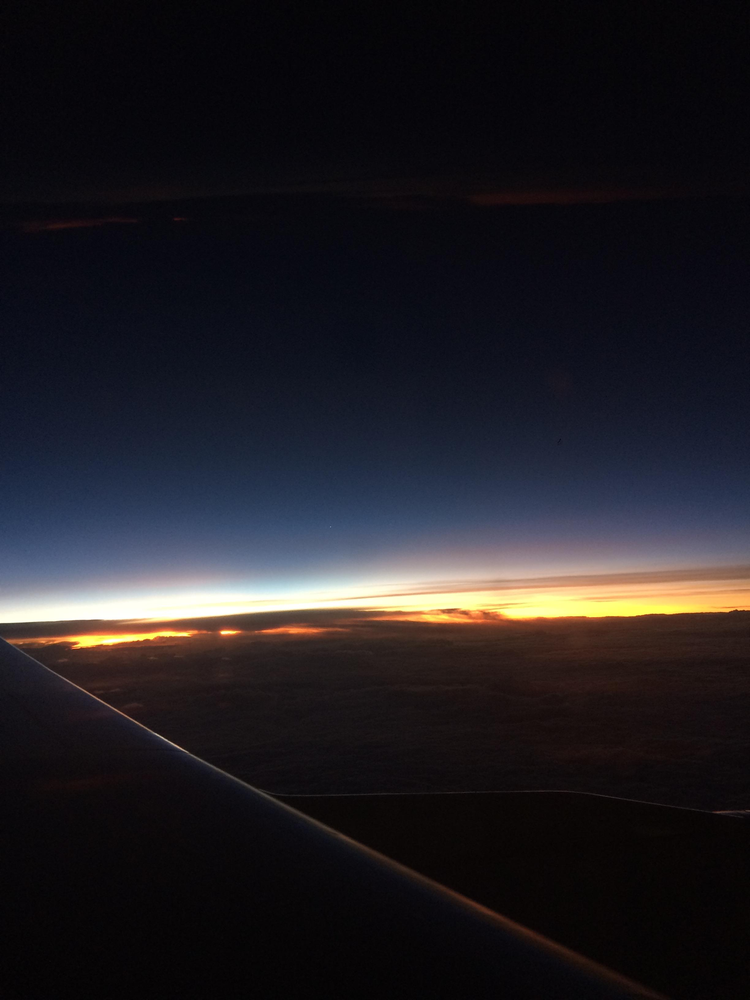
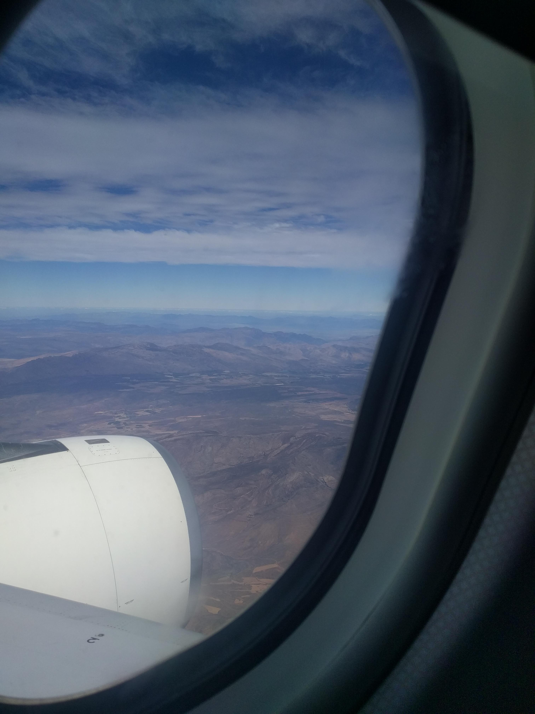
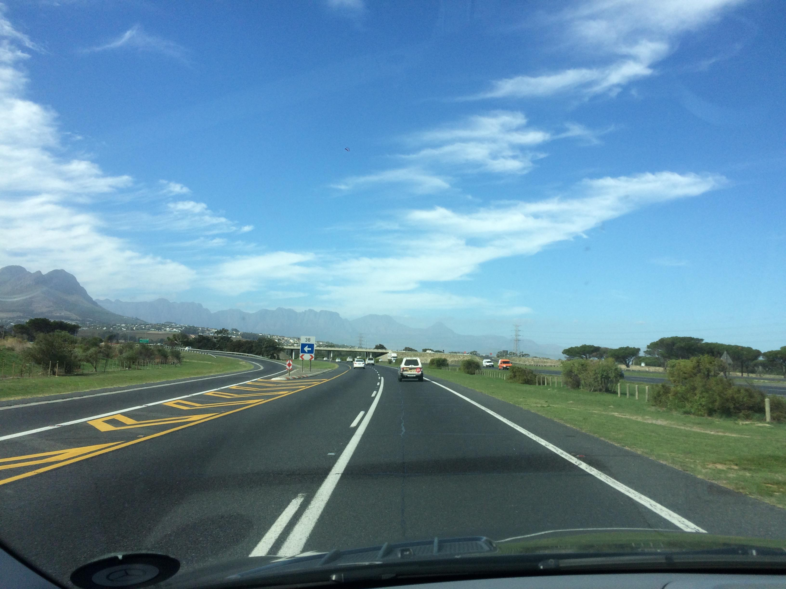
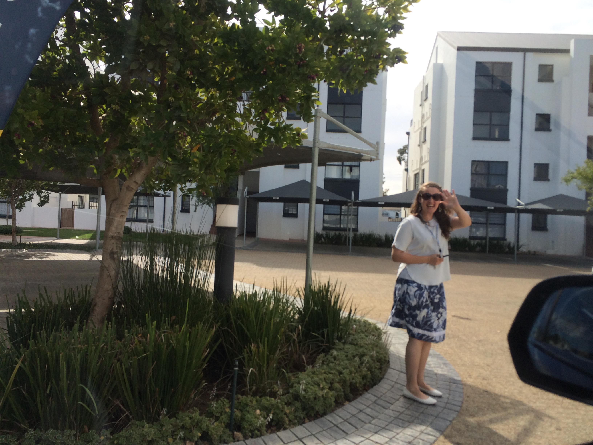
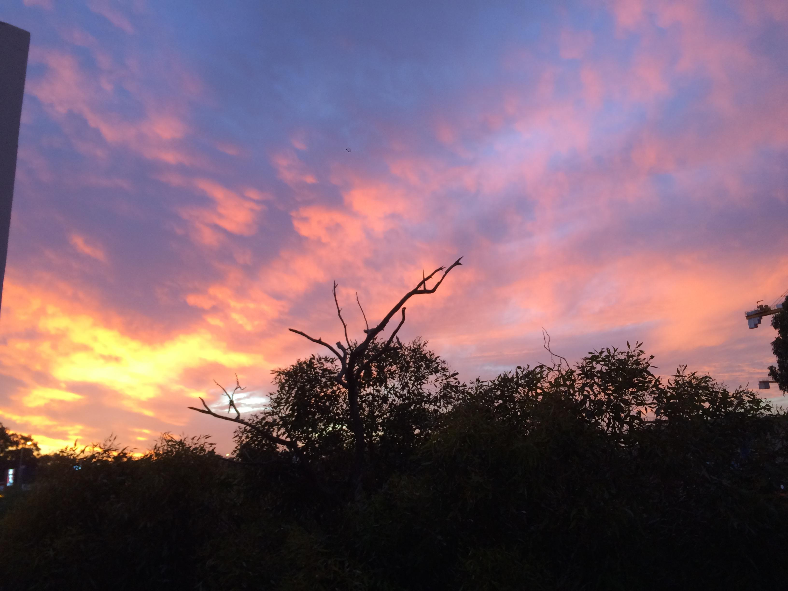

Tag 0 und 1 – „Die Reise“
By Evita Bley

Ich wache früh um 5 auf, bin völlig fertig, weil ich denke, dass ich den Flug verpasst habe. Ich schlafe noch bis 8:30 Uhr, als ich merke, dass ich noch jede Menge Zeit habe. Gepackt habe ich nur meine Klamotten bis jetzt. Ich will drei Wochen wegbleiben, also wird alles eingepackt, was tragbar ist und nicht unter „hängt zwar da aber trag ich nicht“ verbucht wird. Ich packe alles ein und prokrastiniere noch ein bisschen vor mich hin. Um 12 mach ich mich auf den Weg zu Martin. Wir wollen nochmal Gewichte checken und gucken, ob wir alles haben, was wichtig ist für die Südhalbkugel. Boah ist das weit weg. Im Moment bin ich noch sehr relaxt. Ab und zu erfassen mich ein paar Panikschübe, die sagen, du hättest dich besser vorbereiten müssen. Aber muss ich das? Kann ich nicht einfach Dinge auf mich zukommen lassen? Schließlich will ich Urlaub machen und mich nicht stressen mit „Notwendigkeiten“ und „things you HAVE to do“.
Bei Martin sind wir mit der Planung und Checkung recht früh fertig. Also fahren wir so gegen 13:15 mit der S-Bahn zum Flughafen Halle/Leipzig. Der Flug soll 17:40 Uhr gehen. Martin ist noch nie geflogen, außer mit einem Motor-Segler. Ich habe das mit dem alleine fliegen ja vor 1,5 Jahren schon mal versucht und bin dann der Einfachheit halber nach Mallorca geflogen. Wie aufgeregt ich da war! Ich alleine einchecken, Sicherheitskontrolle, alles was halt dazu gehört. Dafür bin ich damals extra ein paar Tage vor dem Flug mit einem Freund nochmal zum Flughafen gefahren, um zu schauen, wie so etwas eigentlich abläuft. Ich habe mich bei allen anderen Flügen mit Eltern oder Freunden nie darum kümmern müssen, sondern bin einfach hinterhergelaufen. Also war ich schon ein bisschen geübt und hatte wesentlich weniger Angst als beim ersten Mal. Was man nicht alles bedenken muss beim Fliegen! Salbe, oha muss in ein Tütchen, ohne die Salbe sehe ich nach 10 Stunden aus wie ein Streuselkuchen und meine Haut spannt und brennt, wenn ich eh schon nervös bin. Das hat geklappt. Auch die Wasserflasche wieder hübsch brav vorher ausleeren und dann hinter der Sicherheitskontrolle wieder neu befüllen. Essen… darf man eigentlich selbst gemachte Brötchen mitnehmen? Ja kann man, wir haben es einfach drauf ankommen lassen. Und Feuerzeuge standen zwar als verboten auf dem Schild, aber da hat keiner was gesagt. Ich wurde dann einer lustigen „ich streiche mit einem Stofffetzen auf dir und deinen Sachen rum“ Sprechstofftestung unterzogen. Die Sicherheitsfrau war wirklich sehr cool drauf und meine „lustigen“ Sprüche aus purer Nervosität haben sie doch auch ein wenig erheitert. Martin wurde auch ordentlich gefilzt, aber alles war gut und wir haben nichts verbotenes gemacht :D

Also endlich am Gate, Passkontrolle, die üblichen Wartereien und dann das Boarding. Alles lief reibungslos. Sobald ich diese ganzen Formalitäten mit einchecken etc. hinter mich gebracht habe bin ich eigentlich relaxt. Einziges Ding diesmal war, wir fliegen nach Südafrika, das heißt drei mal starten und dreimal landen. Ich hasse es, wenn mir schlecht ist. Das heißt, ich hasse Start und Landung. Immer dieses Rumgezuppel hoch und runter, bisschen mehr Gas bisschen weniger, das muss doch nicht sein! Martin hat sich wacker geschlagen, und er hat wirklich Schiss gehabt, weil er sich vorher zu sehr informiert hat …

Wir fliegen über Nacht. Also von 21:30 bis 1:30 sitzen wir in Istanbul im Transferbereich rum. Aber was es da nicht alles gibt!! Jedes Einkaufscenter ist ein scheiß dagegen. Bei Starbucks ein bisschen Internet für lau abgreifen und den Lieben daheim sagen, dass bis dahin alles in Ordnung war. Auch das zweite Boarding ging reibungslos und dann kam der lange 1:30-14 Uhr Flug. Ich bin Raucherin, in Istanbul war das kein Problem, da es auch nach den Kontrollen noch eine Terrasse für die Suchtis gab. Aber dann von 1:30 bis 14 Uhr durchhalten! Der Zwischenstopp in Johannesburg war nur für aussteigende Passagiere und einen Crewwechsel. Aber wir durften den Flieger nicht verlassen. Schlafen im Flugzeug in der Economy-Class? Vergiss es! Um 2-3 Uhr fingen die Stewardessen an, Abendbrot zu verteilen. Wer will denn um die Uhrzeit noch was essen? Ich jedenfalls habe mich irgendwie eingemummelt und zumindest versucht zu schlafen. 3-4 Stunden dösen habe ich wohl auch hinbekommen.

Vom Flieger aus zu sehen, dass man gerade einmal komplett Afrika in der Nord-Süd-Achse überfliegt ist schon beeindruckend, aber auch irgendwie nicht gut vorstellbar. Sehen konnten wir nichts, da Nacht war und dann als es hell war es zu hell war oder Wolken zwischen uns und dem Kontinent. Ab der Südafrikagrenze ungefähr haben wir dann die Berge gesehen, die uns sagten, dass wir in der Nähe dessen sind, wo wir hinwollen.

Landung dann in Kapstadt. Die Landungen an sich waren alle irgendwie bisschen turbulent und schwierig, gerade wenn man eh davor am meisten Schiss hat. Willie, den Jeanine uns als „Taxi“ geschickt hat, stand klassisch mit Schild am Ausgang und wir konnten ihn nicht verfehlen. Das war super organisiert und perfekt getimt (wir waren etwas eher da als geplant, um genau zu sein sind wir genau 13:37 Uhr gelandet yipieh!).

Er fuhr uns dann mit Blick auf die Berge zu Jeanine nach Stellenbosch oder zumindest in die Nähe davon. Die Berge im Hintergrund vom Highway sind der Wahnsinn. Leider war ich einfach zu müde, um geeignet und gewünscht darauf zu reagieren. Erstmal zu realisieren, dass man sich gerade auf der anderen Seite der Erde aufhält ist eh schon schwierig genug.

Jeanine empfing uns dann freudestrahlend und es wurde erst mal „hallot“. Nach einer Dusche, die dringend nötig war, war ich auch wieder ein bisschen ein Mensch und wir sind noch einmal zur „Mall“ gefahren. Das ist mit dem Auto 5 Minuten weg und man bekommt alles was man braucht in 1000 Läden. Dann nochmal kurz zum „Supermarkt“ und die nötigsten Dinge besorgt (mir fehlten schwarzer Tee, Tabak und Bier :D ). Das mit dem Autofahren steht uns auch noch bevor. Linksverkehr und irgendwie ist alles so ein ganz kleines bisschen anders als zu Hause. Das Training dafür steht morgen bzw. die nächsten Tage auf dem Plan. Anschließend war dann auch ihr Freund zu Hause und wir haben uns für Pizza entschieden. Die Wohnung der Beiden ist der Hammer! Wenn man sieht, wie groß die Schere hier zwischen arm und reich ist, weiß man auch warum es hier echte Gated Communitys gibt … Schade ist das, aber nichtsdestotrotz ist die Wohnung toll.

Ein bisschen später war dann auch endlich der erste Sonnenuntergang in Südafrika für mich und ich konnte ihn vom Balkon aus ganz gut beobachten. Ein kleines Tränchen muss ich mir da ja immer noch jedes Mal verdrücken … ich bin halt eine alte Romantiksau :D Noch ein bisschen quatschen und „Master Chef Australia“ gucken und schon lieg ich im Bett um 20:30 Uhr und werde einfach nur totmüde einschlafen.
Gute Nacht Afrika, ich freu mich auf dich!